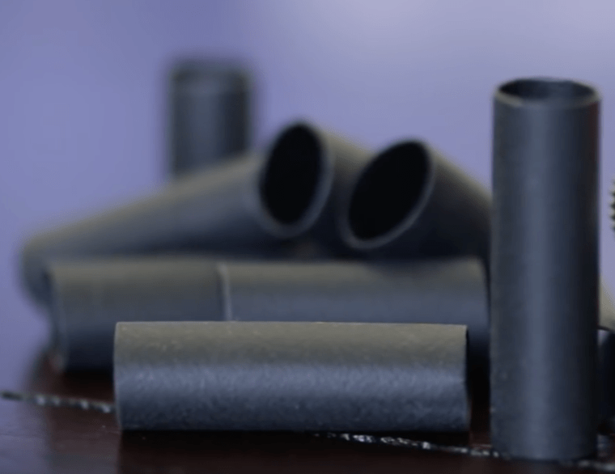
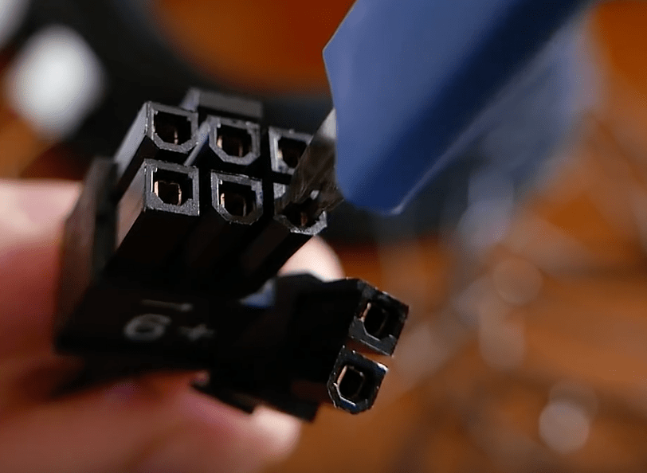
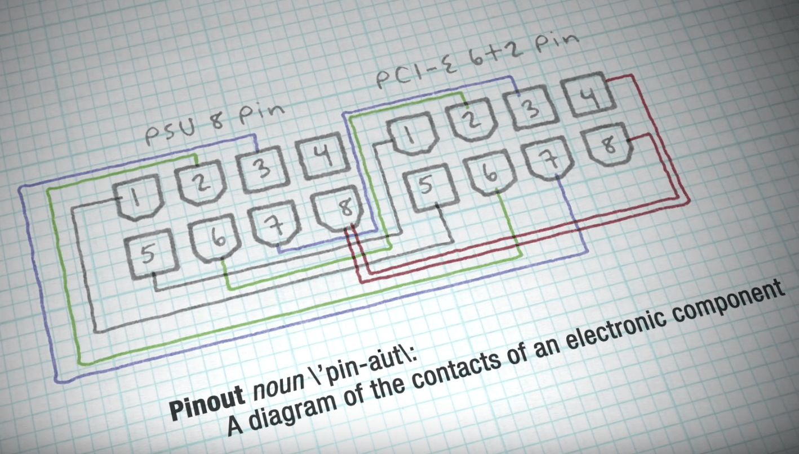
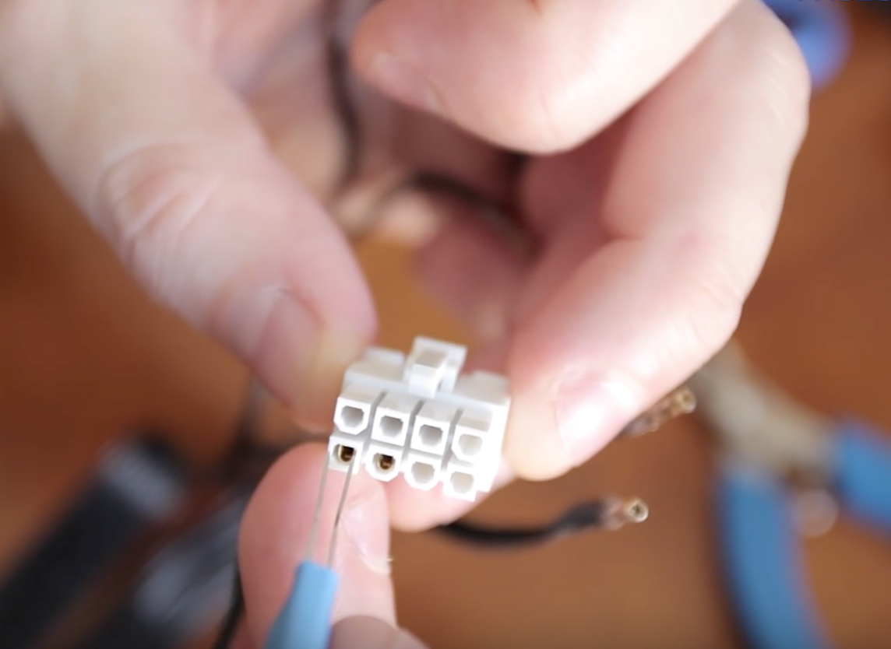
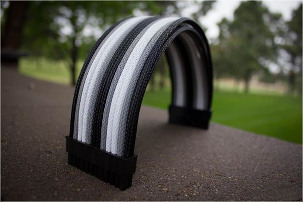

Project 4
HOW TO CUSTOM SLEEVE YOUR OWN CABLES
Table of Contents
Part 1: What is sleeving
Custom cable sleeving is popular with PC enthusiasts and modders. It involves sleeving your cables with an aftermarket sleeve. While custom sleeving may not bring a massive boost in performance such as an upgrade to the CPU or GPU, or a significant reduction in fan noise such as a switch to a water cooling system, custom sleeving your cables is the definitive way towards a well organized, clean, and personalized computer. Sleeved cables neaten up the interior of your build and are a crucial component in the overall color scheme of the computer.
When sleeving you have two main methods to choose from:- Full Length Cables: this involves taking your existing cable, remove the pins, and simply sleeving over the bare cables. This method will cover the cable all the way from the power supply to the components
- Cable extensions: these link your existing power supply cables to your components. This method takes more work as you will have to make them from scratch, including the pin, and cable, rather than reusing the old ones. Also, this will create more cable, so make sure you have room in your case to properly manage them. We will add details on this method soon, but for now this guide focuses on full sleeving method.
- Heat shrink: this style has the heat shrink showing at the end of the cable
- Heat shrink-less: Does not have any heat shrink on the end, the cable goes directly into the connector. This is my personal favorite style as I feel it looks better.
While the basics of sleeving are easily learned, the job can quickly increase in time and complexity depending on the size of your job. In this guide, we will show you the materials required for a custom sleeving job as well as the basic methods of applying sleeve.
Part 2: Materials/Tools

Pre made custom sleeving kits are available from certain manufacturers, for example this neon green custom sleeving kit from Kobra System. While kits like these usually include all the materials needed to complete a job, many tools inside the kit can be replaced by tools that are already available to you around the house.
The best place to buy cable sleeving equipment is Mainframe Customs, and MDPX-X. Both of these companies offer complete selections of what you will need, but MDPC-X (million dollar PC) will run a bit more expensive, however it is the absolute best quality.
Another important consideration will be how much to buy. Measure out all the components and see how long the cables need to be. Then buy more than you need, you will likely have to redo something at least once. If you need 15 feet of cables, buy 25.
Sleeving -
 Different types of sleeving exist, including Paracord, MDPC-X Sleeve, and PET. Paracord is the cheapest, but can be harder to work with as it needs to be stretched more. MDPC-X once again is the best, but it is significantly more expensive. A good middle of the road option is MainFrame Custom's Telios sleeving. This is a type of PET that is easy to use as it holds it's shape better, and looks great without costing quite as much as MDPC-X.
Different types of sleeving exist, including Paracord, MDPC-X Sleeve, and PET. Paracord is the cheapest, but can be harder to work with as it needs to be stretched more. MDPC-X once again is the best, but it is significantly more expensive. A good middle of the road option is MainFrame Custom's Telios sleeving. This is a type of PET that is easy to use as it holds it's shape better, and looks great without costing quite as much as MDPC-X.
Heat Shrink -  This is what will hold the cable onto the pin, cut to 1/4" pieces for heat shrink-less style, or however long you want if you will have it showing. There are also different shrink ratios, including 3.4:1 and 4:1. 4:1 is the most common, but 3.4:1 may be needed for some applications like SATA cables.
Pin Extractor -  Used to remove the pins from the connector. You will need either a Molex or a round Aux pin remover (or both). If you are just doing your 24-pin cable and another ATX cable, all you will need is just the ATX remover. These range from $7-$15 but are a life saver and make the process incredibly simple compared to using something like a paper clip.
Screwdrivers - Used to get around your computer
Heating Element - A heat gun, lighter, or a hair dryer are needed in order to make heat shrink function properly. A Bic lighter is my preference as it is easy to aim and control.
Tape Measure/Ruler - From measuring lengths of cables to lengths of sleeving, accuracy is key. My recommendation is to build a ruler board by screwing your ruler into a piece of wood. This makes it much easier to measure out, and cut your sleeving.
Cutting Utensils - A pair of scissors or an X-Acto Knife are crucial. Also nice is a flush cutter, good for cutting the heat shrink.
Tape - Useful for preparing the ends of cables so that they don't catch on the inside of our sleeving material
Cable Combs - May be necessary to "train" the cables and smooth them out.Part 3: Before starting


Before we can begin sleeving our cables, we must first remove the cables from their plugs and prepare them for sleeving. Be sure to first make a diagram showing which cables go to what pins. This is extremely important as if you do this wrong, it could short your system. Using the wrong order can even blow up your power supply in some cases, so make sure this is perfectly accurate. If you wish to avoid this, you could simply remove one cable, sleeve it, and put it back in the same connector rather then removing all of the at once. However, this is not always possible as some power supplies have double, or connected cables, forcing you to remove all of them, and then cut the paired cables apart. Also keep in mind that some power supply may have blank pins, with no cable in them, this is normal. Once you are absolutely certain you know the pin out, you can being removing the cables.

To actually remove the cable you will need a pin extraction tool. If there is some sort of big piece of sleeving over your cables, or any zip ties remove those now. Next, simply slide the tool into the space between the plug and the pin, push down, and then pull the cable out. This may be difficult to remove, so use a pliers if needed, making sure the pin extractor is between the pin and the connector. This process is different for connectors like molex, so if you want to sleeve those types of connectors you will need that tool as well.
Once you remove the cable make sure you don't loose the connector, and are careful with the pin as it can be easily damaged. Keep doing this with all the cables you want to remove, or just do one at a time if you prefer that way.
Part 4: Starting to sleeve
Now you need to cut the sleeving to the proper length. Take your stock cable, and lay it against a ruler. Then take your sleeving of choice and cut it so that the sleeving runs right up to the wings on the pin (as shown below).
If you are using PET, grab your lighter and flame the end for just a second, barely touching the flame to the sleeving. Then, feather it down with your fingers. This will help seal the end of the sleeving and prevent fraying. If you are using Paracord you will need to cover the end of the wire in tape, or use a paracord threader to make this easier and prevent the Paracord from easily fraying.

Next you need to slide the sleeving over the cable. Keep stretching and pushing the cable in all the way in the sleeving. Grab some heat shrink, and place the end of the heat shrink up to the end of the sleeving. Take your lighter, and heat it up until it is a little bit smoky. Then, take your fingers, and pat the heat shrink down gently. Immediately, take your flush cutters, and cut a slit from the loose end of the heat shrink to where it is tight and shrunk. Then, while it is still hot, grab the loose part and pull it off the end of the pin. What should be left is a little bit of melted heat shrink that will establish ha secure connection with the sleeving and wire. This is the most permanent method, and looks great without being overly complicated.
If you are going with the heat shrink visible method you will do the same steps, but run the lighter over all the heat shrink so it all shrinks, and not remove any. You can cut the heat shrink to whatever length you prefer. Remember that some will be covered up by the connector, so take that into account.
Part 5: Finishing Sleeving
Once you have sleeved all the cables you want sleeved, you need to start plugging them back in. Refer back to your diagram, and make sure your are following it exactly.
Align the pin so that the wings are facing up, towards the side of the connector with the latch. This is the only way they will fit. Push the cable in until you hear the two prongs click into the connector.
Pull a little bit on the wire to make sure it is in place. Also check the terminal side of the connector and make sure all the pins are level. If something does not look right, go back to your pin remover, take them out, and put them back in.

If you have followed these steps correctly, you should have a completed bundle of sleeved cables. These cables should last a lifetime, and look incredible.
You can plug them in just like regular cables, replacing the ones that came with your power supply. Still keep the old ones for reference, and as backups however. You can now straighten them, and shape them any way you please with the help of cable combs.
Use the combs to "train" the cables. You can insert the cables into your build, and arrange them how you want. Add the combs and leave them on for a few days. After that the cables should retain their positions even without the combs.